Integrate science & society
Analyze ecological, economic, and social data to design sustainable solutions for forests and the human systems linked to them.
How I shaped my studies at UW and the experiences that broadened them.
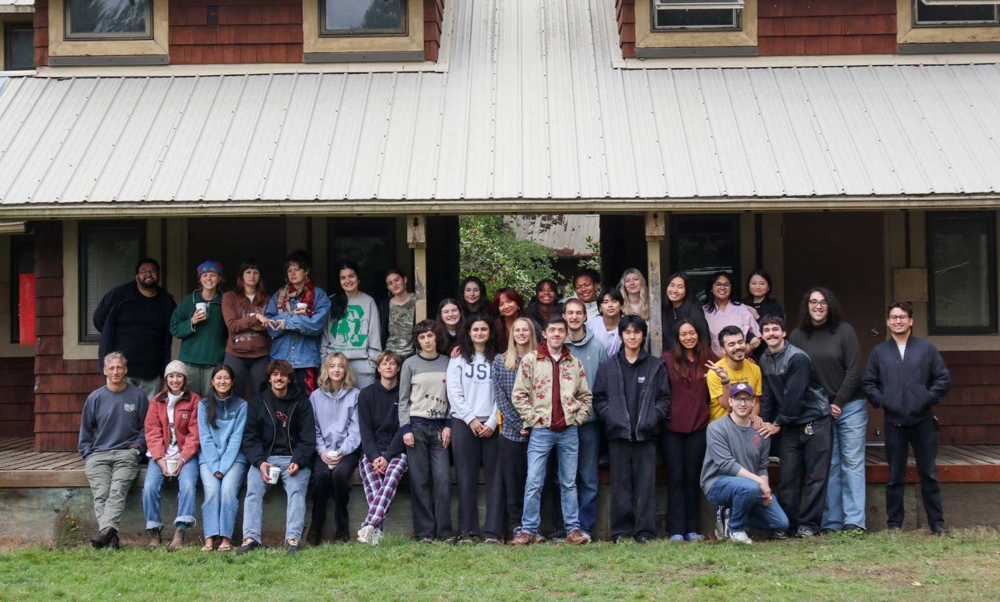
A self-directed, student-led, interdisciplinary major at UW: a major designed around your own goals.
Community, Environment & Planning (CEP) is an interdisciplinary Bachelor of Arts degree at the University of Washington. While housed in the Department of Urban Design & Planning, CEP does not provide a predefined educational path. CEP empowers students to pursue their own educational goals in the company of other self-directed individuals.
The CEP core curriculum focuses on theory and practice applied to real-world settings, while electives are satisfied by taking upper-level courses all across campus. Students participate in a governance process that supports the major while teaching them how to be effective leaders and doers in the world through practice, personal formation, intentionality, communal learning, and stewardship.
Our students graduate to become urban planners, educators, non-profit managers, entrepreneurs, communication experts, and professionals of all sorts.
Because CEP let me build my own path, I chose to focus on environmental science and education. My Interdisciplinary Study Plan (ISP) is where I mapped that out and connected coursework from across campus into one coherent degree.
Restoration, ecology, data analysis, field work, stewardship, and ethics of terrestrial ecosystems.
ESRM, in UW's School of Environmental & Forest Sciences (SEFS), trains future environmental science and natural resource professionals who couple rigorous analysis with ethical foundations to steward terrestrial ecosystems, now and for generations to come.
Analyze ecological, economic, and social data to design sustainable solutions for forests and the human systems linked to them.
Map, measure, model, and manage ecosystems with drones, LiDAR, satellite imagery, sensor networks, eDNA labs, and AI-driven analytics.
Weave environmental justice, traditional ecological knowledge, and sustainability into every management choice.
Synthesize quantitative and qualitative evidence, weigh trade-offs, and navigate uncertainty.
Craft clear narratives and visuals for scientists, policymakers, and the public, and guide interdisciplinary teams toward shared goals.
Engage respectfully with communities so the benefits and burdens of resource use are shared equitably.
Reflect on theory and practice, nurture curiosity, and continually renew skills to meet emergent environmental challenges.
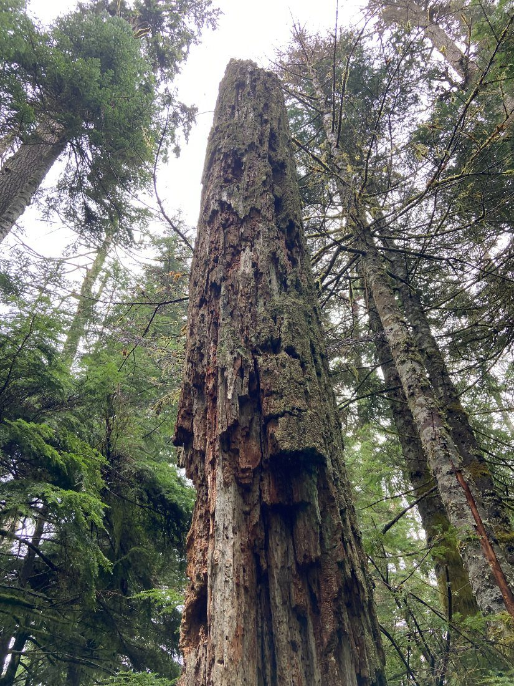
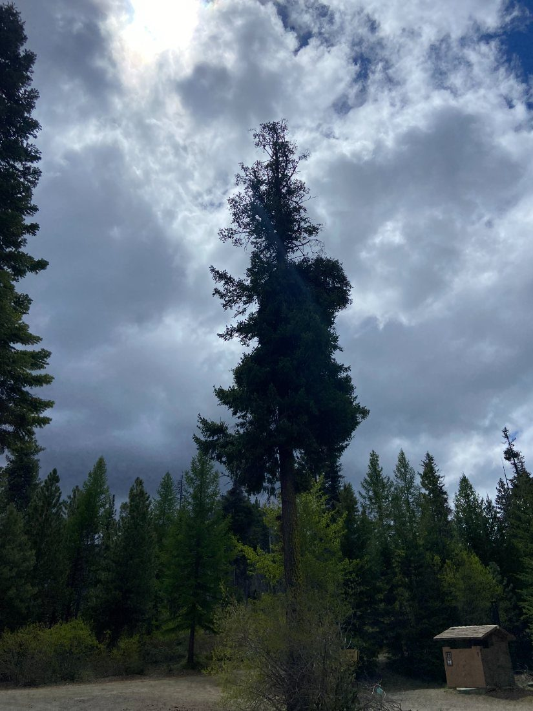
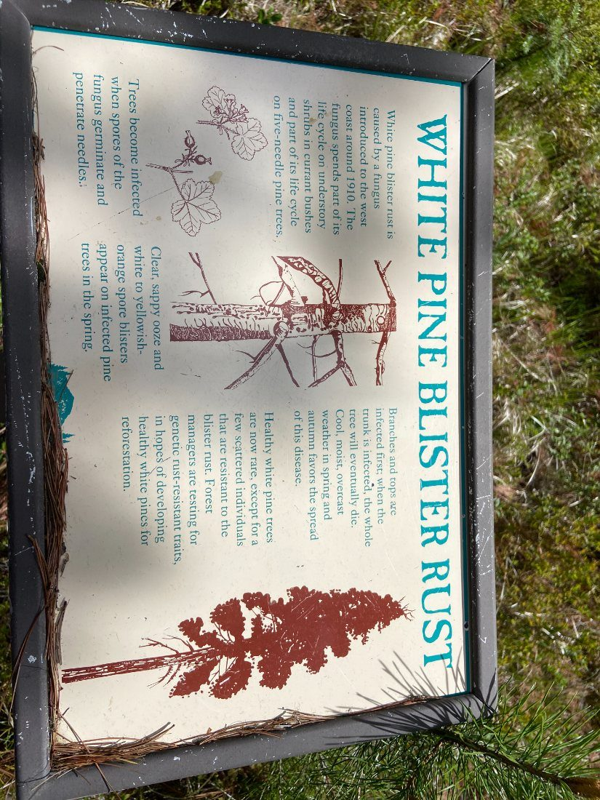
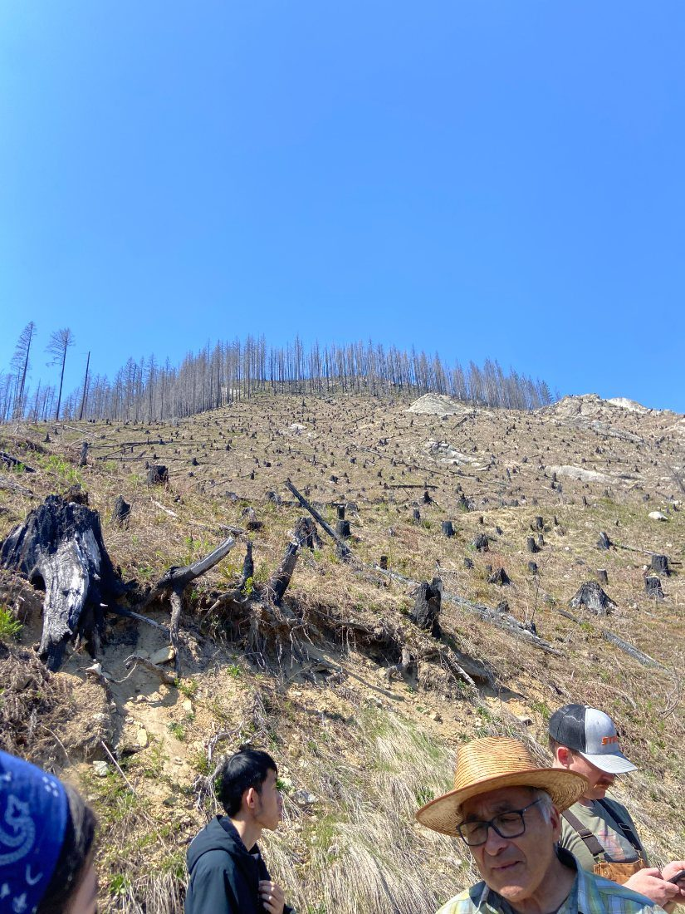
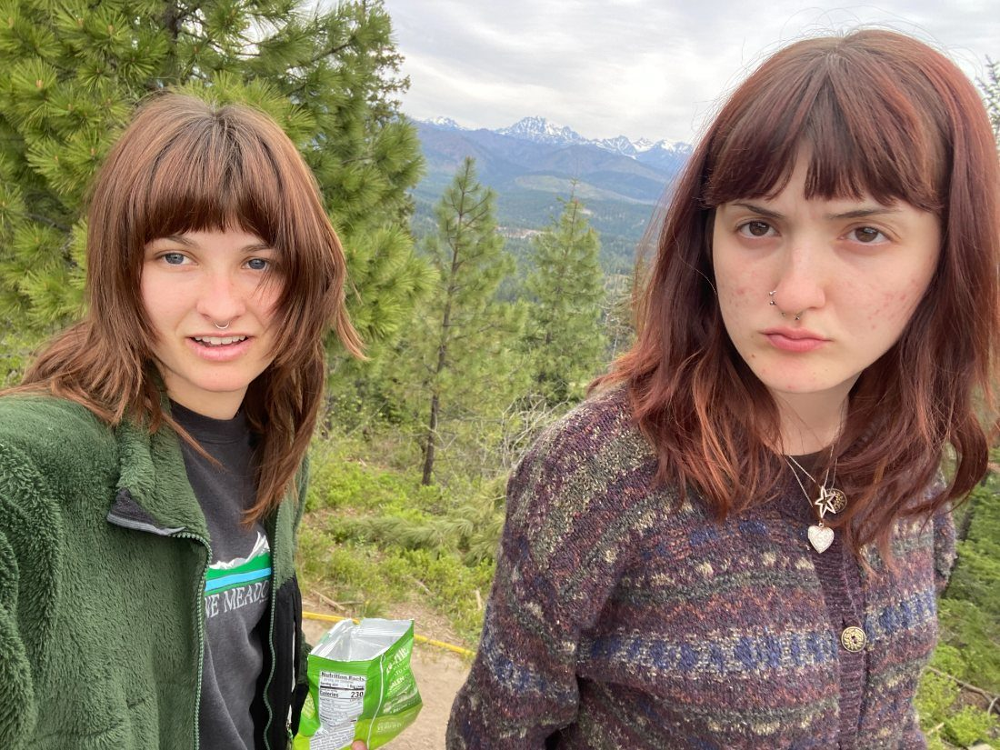
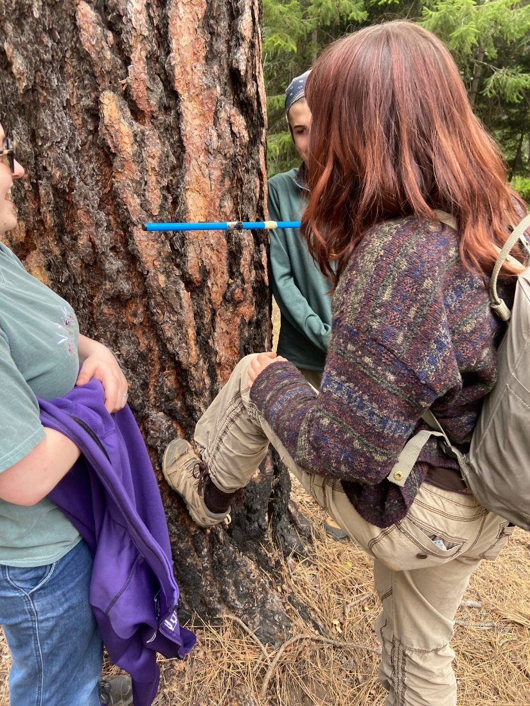
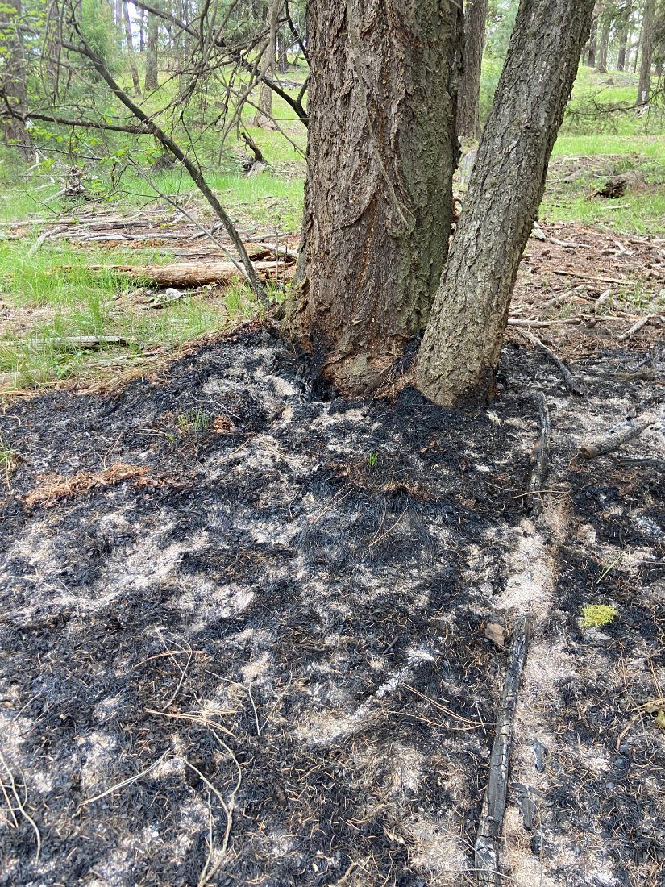
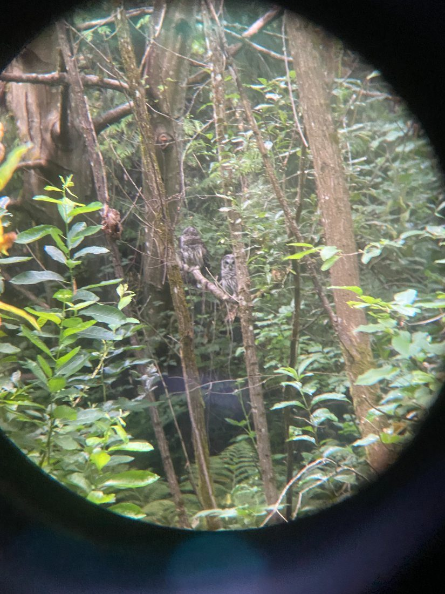
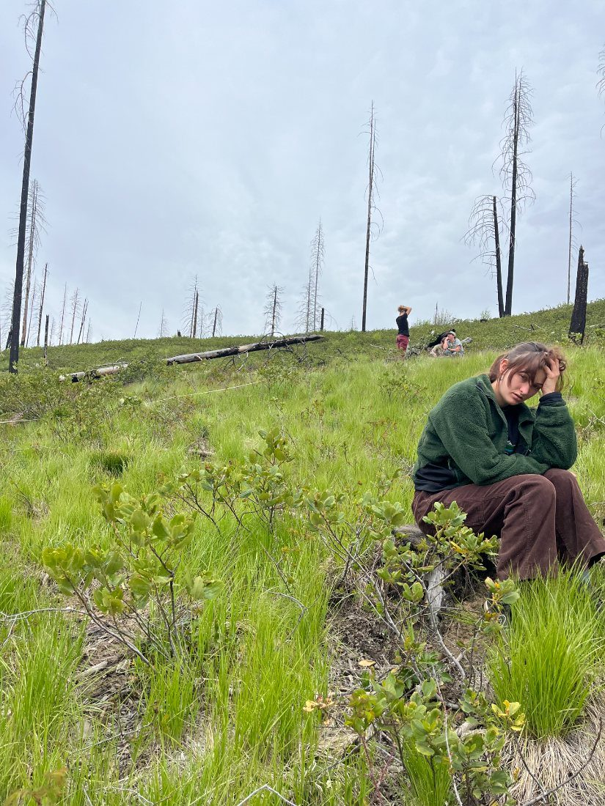
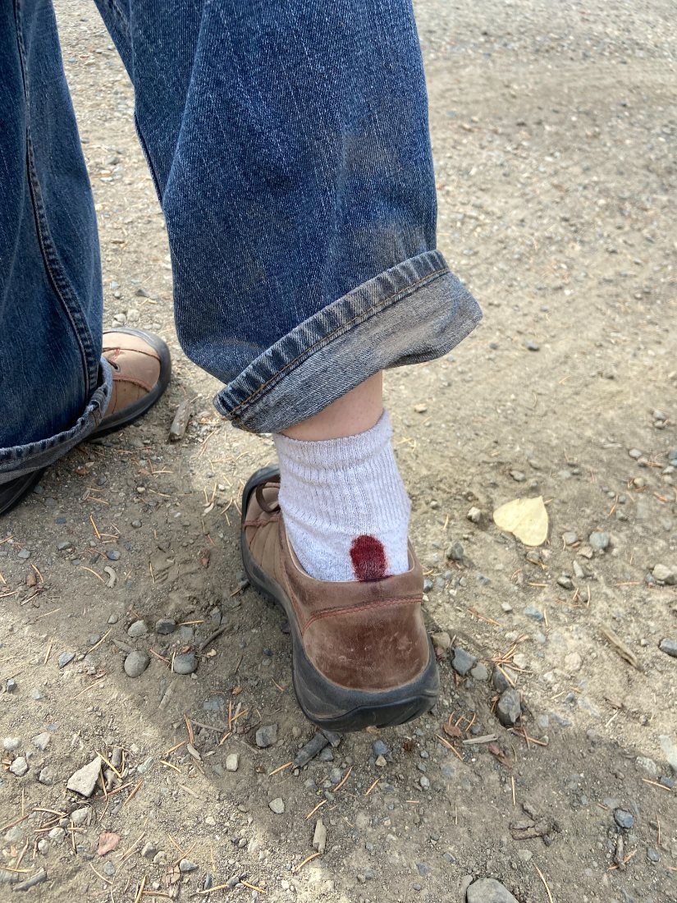
Teaching English to university professors in León, Spain.
While studying abroad in León, Spain, I helped teach English to university professors, leading classroom sessions and conversation practice.
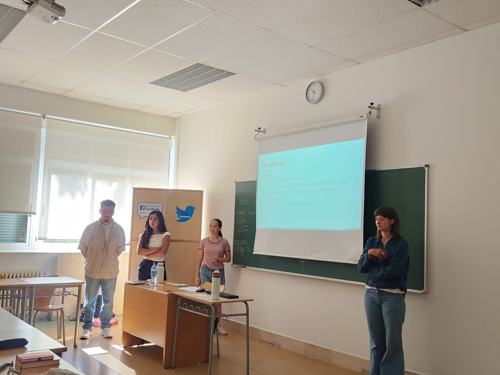